How to lose weight and hair
through stress and poor nutrition

|
|
The Hacker's Diet Online How to lose weight and hair through stress and poor nutrition |
|
The computer tools associated with my 1991 book The Hacker's Diet were originally developed as spreadsheets and macros for Microsoft Excel. In 2000, I released a version of the computer tools for PalmOS handheld devices, with a desktop component able to create HTML documents from weight and exercise logs kept on the handheld.
For a long time, I've wanted to move away from these proprietary platforms, and given the ubiquity of the Web, a browser-based Web application seemed an attractive solution—no longer would the user be tied to a particular computer or PDA; log entries could be updated and consulted from any machine with access to the Web. After a protracted on-and-off development process occupying more than a calendar year, The Hacker's Diet Online is now available.
To create an account, visit the main Hacker's Diet Online Sign In page:
https://www.fourmilab.ch/cgi-bin/HackDiet/
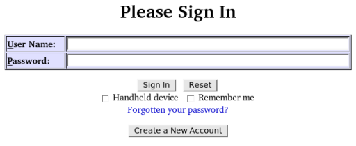
Click the “Create a New Account” button, and the new account form will be displayed.
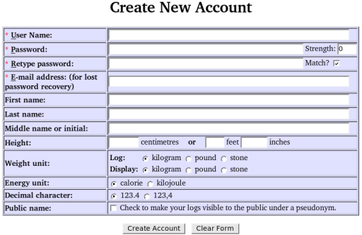
Choose a user name and password, which is entered twice to ensure it's correct (the “Match” box will be checked if the password and confirmation agree). The “Strength” field displays an estimate of the security of the password on a scale of 0 to 10. Your E-mail address is required so that a replacement password can be supplied in case you forget your original password. Your E-mail address will not be disclosed to third parties, and Fourmilab will not send you junk mail. You can, if you wish, enter your name; this is optional. If you enter your height, it will be used to compute the scientifically dubious Body Mass Index. You can keep your log entries in units of kilograms, pounds, or stones and pounds, and you can change the unit in which weights are entered and displayed independent of units in the database. Similarly, energy balance can be expressed in (kilo)calories or kilojoules. You can choose whether numbers are displayed with a period or comma as the decimal separator character. If you want to make your logs visible to the public under an automatically-assigned pseudonym, check the “Public name” box. All of these items, with the exception of the User Name, can be changed from the Settings form, so if you're unsure about any of the optional items, you can leave them until later.
All text items in The Hacker's Diet Online, including user names and passwords, can contain any Unicode graphic characters whatsoever; if your name happens to be “成吉思汗” or you fancy a password of “الجبر Лобаче́вский”, go right ahead—if you can type it, and your browser can display it, The Hacker's Diet Online can handle it.
After creating your new account, log in using the user name and password you selected. You'll be taken to a blank monthly log for the current month. Checking the “Handheld device” box selects formatting appropriate to devices with small screens such as personal digital assistants and mobile telephones. On such devices you can bookmark the special URL:
https://www.fourmilab.ch/cgi-bin/HackDiet/?handheld=y
which automatically checks the “Handheld device” box and displays a sign in page adapted for a small screen. The “Remember me” box causes a “cookie” to be stored in your browser which permits you to sign in without entering your user name and password; don't select this option if you are signing in from a public terminal or somebody else's computer.
At the top of every page in The Hacker's Diet Online is a navigation bar. The following sections show the functions available on the various pages accessible from the bar.
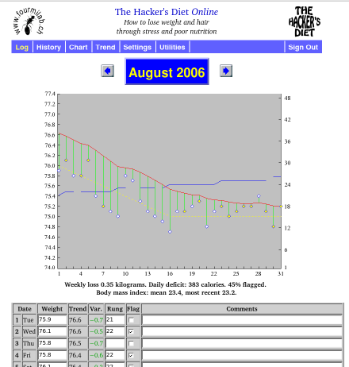
This form is used to enter items in a monthly log. When you sign in, the current month's log is displayed.
When you enter a weight, the trend is calculated for that day and the Variance (difference between today's weight and the trend) appears in the “Var.” field, positive if the weight is above the trend, negative if below. Weight and variance are displayed to one decimal place for kilograms and pounds. When stones (a predominantly British unit of weight equal to 14 pounds) are chosen as the weight unit, weight is shown in stones and pounds separated by a space; for example, a weight of 152.7 pounds would appear as “10 12.7”. When weight is set to stones, variance continues to be shown in pounds—a variance of one or more stones would indicate something seriously amiss!
If you're following the exercise program presented in The Hacker's Diet, use the “Rung” field to record which rung on the exercise ladder you completed that day. You can use the “Flag” field to mark any recurrent event you're interested in keeping track of on an ongoing basis, for example, whether you found the time for a game of tennis or had an ice cream snack before turning in for the night. The “Comments” field can be used to record any text you like (up to 4096 characters).
To duplicate the previous nonblank item in a column, enter a single
period in the field. This is handy for entering exercise rung entries,
which change infrequently and rarely at all once you've reached your
goal. If you use the comments field to note when you're out of town,
you can just enter a period when you're in the same place as the day
before. If you must enter a comment consisting of a single period,
enter a space after the period.
Abbreviated Weight Entry. Weight generally changes little from day to day, but if your scale reads to the nearest 100 or 200 grams (or the equivalent in pounds), a given day's weight will rarely be identical to that of the day before. This limits the utility of the field copying trick discussed in the last paragraph. The monthly log permits you to abbreviate weight entries which differ slightly from the last. If you enter a decimal point followed by a single digit, the previous weight entry will be copied with the decimal digit replaced by the digit you specified. For example, if yesterday's weight was 73.8 kg and you enter “.6”, today's weight will be entered as 73.6 kg. Similarly, entering a single digit followed by a decimal point and another digit copies the previous weight, replacing its units and decimal place with those you entered. If yesterday you weighed 158.2 pounds and today you tipped the scale at a mere 157.9, you need only enter “7.9” for today's weight. If the decimal place is zero, you need not enter it—simply enter the units digit followed by a decimal point.
| Previous Weight |
You Enter |
New Weight |
|---|---|---|
| 11 9.3 | 6. | 11 6.0 |
| 11 6.2 | 4.8 | 11 4.8 |
| 10 11.7 | 2. | 10 12.0 |
| 10 11.5 | 9. | 10 9.0 |
| 10 9.9 | 10.2 | 10 10.2 |
When the weight unit is set to stones you may use the abbreviations
above to change the pounds and decimal place of the previous
stone and pound display. In addition, when the display unit is set to
stones, if the previous entry has a pounds field between 10 and
13 and you enter a single digit, decimal point, and optional
decimal digit, the action taken depends on the units digit you
enter. If it's between 0 and 3, it replaces the last digit of
the pounds in the last entry, but if the digit is 4 or greater
(which is invalid in a stones and pounds display), that
digit replaces the two digit pounds field in the
previous entry. This reduces the typing required if your
weight happens to fluctuate around X stones 10. In
addition, when the display unit is stones, you may enter two
digits followed by a decimal point and an optional decimal
digit to replace the pounds field of the last stones and pounds
entry; you must enter the decimal point to distinguish the
entry from one denoting an even number of stones. The examples
in the table at the right should clarify how this works in
practice.
Incrementing and Decrementing Exercise Rung.
To increment the exercise rung by one from the most recent
entry, enter a plus sign in the Rung field. To decrement the
rung by one, enter a minus sign.
Each monthly log page includes a chart. The weight and trend are plotted in the “Floats and Sinkers” form described in the book: the trend is drawn as a solid red line with each day's weight shown as a diamond attached to the trend by a green line which shows the extent to which it is above or below the trend. Days for which the “Flag” box is checked in the log are shown as yellow diamonds; days not flagged are filled with white. The vertical axis at the left gives the weight scale and the days of the month are shown on the horizontal axis. Below the chart, a snapshot analysis of last week's weight gain/loss and calorie excess/deficit is given; for a longer term analysis visit the Trend page. If one or more days of the month have the Flag box checked, the percentage of flagged days follows the calorie balance.
If the monthly log contains any entries in the exercise Rung column, a blue line is plotted showing daily exercise level (blank for any day the Rung is not filled in) with a Rung scale from 1 to 48 at the right of the chart. The scale is adjusted so the last rung in the chart is explicitly labelled.
If the month displayed is within or after the conclusion of a diet plan created by the Diet Calculator, and the user has indicated the plan should appear in the chart, the plan is drawn as a dashed yellow line, with dates after the end of the plan shown as a horizontal line at the plan's goal weight. By comparing the actual trend as it evolves with the plan, you can evaluate your progress toward the goal. After arriving at the goal, the constant goal weight provides a reference for evaluating the subsequent evolution of the trend.
You can navigate to earlier and later months by clicking the navigation buttons to the left and right of the month title.
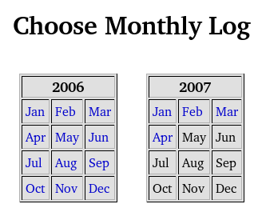
The “History” item on the navigation bar displays a calendar of monthly logs present in the database. Click on any month to display its monthly log.
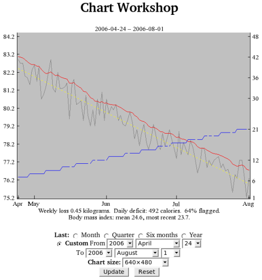
Historical charts, covering standard periods of one month, a quarter (three months), six months, and one year ending at the present, or a custom interval of your choosing can be displayed by setting the controls below the chart. An historical chart showing the trend over the requested duration (assuming the requisite log entries are present) is plotted and a trend analysis for the period charted is shown at the bottom of the chart. As with monthly charts, the exercise rung (if used) is plotted as a blue line and the Diet Plan (if it covers any portion of the charted period and the user has checked the box to request it be plotted) is shown as a dashed yellow line.
Historical charts covering a one month interval differ from charts in the monthly log in that the latter always show days of a single month, while one month historical charts display a period which may span month boundaries. In the early days of a month a one month historical chart may give you a better perspective on the evolution of the trend than a monthly chart which only shows a handful of days. Short term historical charts plot weight and flag entries as “floats and sinkers” in the same form as monthly charts, but these are excluded from longer-term charts in which they would create such clutter as to render them useless. In such charts, as in the example above, the weight is plotted as a grey line. Over periods of a quarter or longer, only the trend really matters anyway.
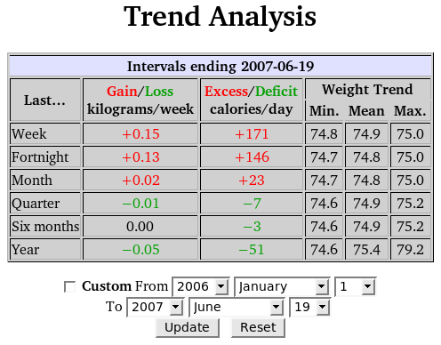
The Trend Analysis page uses information in current and prior monthly logs to calculate your average weekly weight loss or gain and the corresponding average daily calorie deficit or excess. For each time period linear regression is used to fit a straight-line trend and the rate of change in weight and calorie balance are determined from its slope as described in the book. For each interval, the minimum, average (arithmetic mean), and maximum values of the weight trend are shown.
The standard intervals all end at the present. You can analyse the trend between any two dates in the database by checking the “Custom” box and specifying the starting and ending dates.
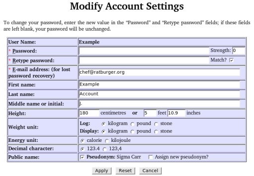
The “Modify Account Settings” page allows you to change any of the settings you specified when you created your account apart from the User Name, which is the fundamental identification of the account.
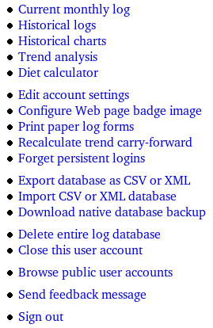
The “Utilities” page provides access to all of the functions of The Hacker's Diet Online: those available directly from the navigation bar and less frequently used facilities linked only to this grab-bag of a page. Only functions available exclusively from the Utilities page are discussed below.
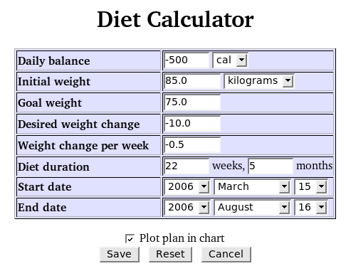
The Diet Calculator allows you to plan a change in weight, either loss or gain, exploring the relationship between the calorie deficit or excess and the duration of the diet. The resulting diet plan can optionally be shown in the monthly and historical charts, allowing you to monitor your progress and to display a constant target weight at the conclusion of the diet.
The Diet Calculator is displayed from “Utilities” page of the navigation bar. When you first display the Diet Calculator, the daily calorie balance is set to −500 calories per day (which results in the loss of about a pound per week, as discussed in the book), and the initial weight to the most recent trend value, rounded to the nearest whole number. Weights are shown in the display unit selected in the account settings, which may be temporarily changed with the selection box to the right of the “Initial Weight”. The initial goal weight is arbitrarily set to 5 kilograms or 10 pounds less than the starting weight; adjust this to your personal weight goal. The default starting date of the diet is the current date; The “Diet duration” fields will then show the duration of the diet in weeks and months and the “End date” when you may expect to achieve the goal weight.
This form is fully associative—you may change any quantity and the form will recalculate the others accordingly. Setting the daily calorie balance adjusts the weight change per week, duration, and end date of the diet. The calorie balance should be negative if you wish to lose weight and positive if your intention is to gain weight. You may change the initial weight and goal weight to any values you wish, which adjusts the desired weight change and recomputes the duration of the diet. If you change the desired weight change, the goal weight is modified to reflect the new difference from the initial weight and the diet duration recalculated. Changing the start date adjusts the end date based on the estimated duration of the diet. Adjusting the weight change per week, weeks or months to go, or the end date modifies the daily calorie balance to achieve the desired weight change in the specified period of time.
The values you specify in the Diet Calculator are saved and reappear when you return to the Diet Calculator. If you check the “Plot plan in chart” box, the course of the planned diet is shown as a dashed yellow line in the chart displays for the duration of the diet and subsequently as a horizontal dashed line representing your weight maintenance goal. If you find this distracting, simply uncheck the box.
To plot the goal weight in charts without the sloping diet
plan, set the initial and goal weights to the same value and the
start date before the first month in the log.
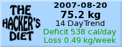
If you'd like to make your progress visible to visitors of your Web
page or log, this item allows you to configure a “badge”
in the form of a small, dynamically generated image which you can
include on your personal Web pages. The image appears like the sample
to the right and shows the date of your most recent weight log entry
and the weight as of that date. Below, the analysis of a trend whose
duration you can select between one week and one year is presented,
with the daily energy (calorie or kilojoule) excess or deficit and
weekly weight gain or loss estimated from the trend. Badge generation
is initially disabled; when you enable it by choosing a trend analysis
duration, you're provided with XHTML/HTML code which you can copy and
paste into your Web page to display the badge. The badge image is
automatically updated when you make any relevant change to a log; the
image displayed on your page will automatically reflect your most
recent log entry. You can disable badge generation at any time by
setting the trend interval to “Disable badge”.
Many people, myself included, prefer to log their weight and exercise on paper and then transfer the data to the computer later. To generate paper log forms, click the “Print paper log forms” item. A form will appear which allows you to specify the first and last month and year of the logs to be printed. When you click “Generate”, a document containing the requested log forms opens in a new window, and a print request is automatically queued a second later (allowing the document to render in the browser). (If JavaScript is disabled, you'll have to manually print the document and navigate back to the request page with the “Back” button.) The paper log form document uses a paged media style sheet to insert page breaks between each monthly log; it's up to your browser to handle this style element properly—if it doesn't, there's nothing I can do about it.
The trend at the start of a month depends upon the trend at the end of the preceding month, and so on all the way back to the first month in the database. Because trend computation is a computationally intensive task, The Hacker's Diet Online stores the trend carried forward from the previous month with the log data for each month, avoiding the need to compute the trend for previous months except in unusual situations (for example, if you import a CSV or XML file containing data for a month in the past, or enter or modify data for a prior month). This is all handled automatically.
These stored trend values are “fragile” in the sense that if a hardware or software error should manage to clobber the trend, it will result in incorrect trend and variance computation for all entries for the month, and there's no direct way to enter the correct trend carry forward to replace the bad value. To guard against such an eventuality, The Hacker's Diet Online provides the ability to completely recompute all trends from the fundamental log entries. You'll probably never need to use this feature, but just in case you do, it's there.
When you check the “Remember me” box on the Sign In page, a “persistent login cookie” is stored in your Web browser so that you may subsequently log in from that browser and computer without specifying your user name and password. If you use multiple browsers and/or computers, separate persistent logins are maintained for each. This item invalidates all stored persistent logins for your account. The next time you wish to sign in from any computer or browser, you will have to specify your user name and password. You can use this item when you've accidentally signed in from somebody else's computer or a public terminal with “Remember me” and wish to make sure somebody can't access your account from that machine.
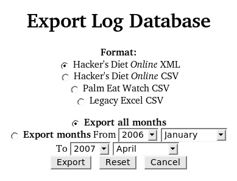
You can export your Hacker's Diet Online databases in a variety of formats, including CSV files which you can import into the Palm Eat Watch application and even the legacy Excel spreadsheets. If your interest is in making a local backup of your files on the Fourmilab server, the best choices are The Hacker's Diet Online's native XML and extended CSV formats, which preserve all information in the online databases. The XML export format is specified by a Document Type Definition which permits it to be used with a validating XML parser and includes a style sheet which allows XML export files to be displayed in an XML-aware browser. The following links show examples of single-month exports in the various formats.
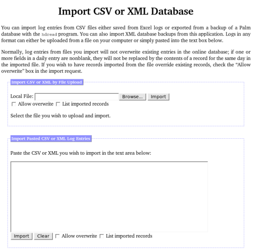
If you've been keeping Hacker's Diet logs in Excel or another spreadsheet or database package, you may want to transfer your existing logs to the online application. To do this, save the logs you wish to upload in Comma Separated Value (.csv) format. If you're using a different program to keep your logs, be careful the columns in the CSV file are the same as those used by the Excel macros or the Palm Eat Watch program. Only the Date, Weight, Rung, Flag, and Comment columns are imported—the other fields are recomputed as required. In logs using the conventions of the Excel macros, comments appear as non-numeric entries in the Weight column; it isn't possible to attach a comment to a day for which a weight is entered.
You can import logs in any of the four export formats described above. For CSV imports, you can even mix formats within a single import, as long as the header records are included before each sequence being imported. An XML export file must be imported by itself, but may contain any number of months of log entries. By default, items from the file being imported will not overwrite existing log entries; to permit imported data to override entries in the online database, check the “Allow overwrite” box in the import section you're using.
The data you enter into The Hacker's Diet Online is stored on the Fourmilab server farm, which has multiple redundant components to prevent single-point failures. All data are backed up nightly to tapes, which are kept off-site and never reused. Still, it's nice have your own private copy of the original data, and you can obtain one with this item, which allows you to download a ZIPped archive named “hackdiet_log_backup_YYYY-MM-DD.zip” which contains a collection of YYYY-MM.hdb files, one for each monthly log you've entered. These files are in the native data format used by The Hacker's Diet Online, and contain all the information present on the server. Users who wish to install The Hacker's Diet Online application on their own server can install these files directly into their user directory on that machine.
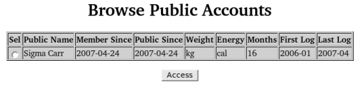
Ever since writing The Hacker's Diet, I have frequently remarked that one of the best things about writing a diet book is that it provides a tremendous incentive not to regain the weight you lost; if you do, you'll be the laughingstock of all your readers. The Hacker's Diet Online provides a similar incentive to confident participants—they can, if they wish, make their progress visible to other users of the application (but not the general public) under an automatically assigned pseudonym. (You can't choose the pseudonym, but if you don't like the one you were given, you can request a different one from the “Settings” page.)
Users browsing a public account can view logs, plot historical charts, and perform trend analyses. Private information, for example comments in log entries, is hidden from those browsing the account and, of course, public access is entirely read-only. You are free to revoke public access to your account at any time; just uncheck the “Pseudonym” box in the “Settings” page. While all public access is via pseudonyms, really confident users are perfectly free to disclose their pseudonym on a personal Web page or log.
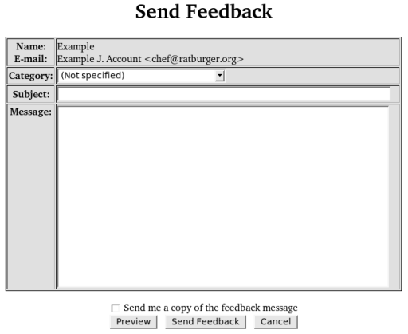
To make this application the best it can be, your problem reports, suggestions for improvements, feature requests, reactions to the documentation, and general comments are essential. You can send them easily using the Send Feedback page accessible from the “Utility” menu. Please specify an appropriate category for your message. If you'd like a copy of the feedback message sent to the E-mail address for your account, check the box at the bottom.
The complete source code for The Hacker's Diet Online application, written in the Perl language using the Literate Programming methodology, is available for people with their own Web servers who wish to install a private copy, or for developers and other curious folks who'd like to look under the hood to see how it works or re-use components in other Web applications. The source code is in the public domain and may be used in any manner without any restrictions whatsoever, but it is utterly unsupported—you are entirely on your own. This is a large and reasonably complex application: more than 27,000 lines of code and documentation, with components in the Perl, JavaScript, Cascading Style Sheet, XML Document Type Definition, and LaTeX languages. Installing it on a different server requires substantial work in changing settings for the server environment and establishing the initial database structure. If you decide to undertake this task, you'll have to puzzle it out yourself—I cannot offer any assistance.
The goal of Literate Programming is to create programs which can be read as an essay as well as run on a computer. The process of building the program automatically creates a PDF file which contains all of the code and documentation. This document is presently in excess of 610 pages, and may be read with any PDF viewer application. The formatting of this document is somewhat flawed at present: some long lines and sequences of code overflow the page. I am in the process of cleaning these up on a “time available” basis.